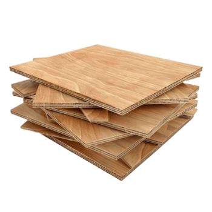
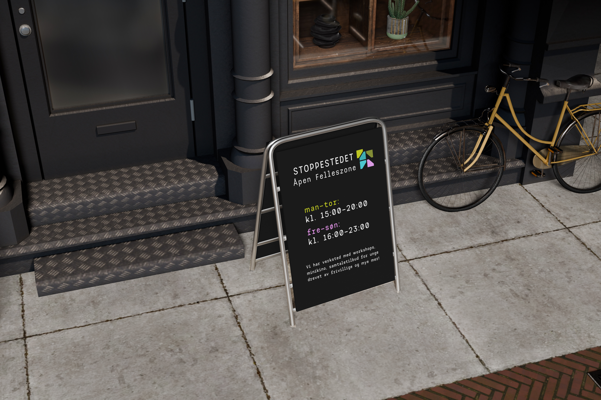

01 — Logo


Primær logo
Logomerket er bygget opp av geometriske flater som sammen danner en form som kan assosieres med et knutepunkt — møte, orientering og fellesskap. Den åpne formen understreker tilgjengelighet og inkluderende bruk.
Sekundær logo
Sekundærlogoen kombinerer logomerket med tekst og brukes i mer informasjonsrettede sammenhenger — for eksempel på vinduer mot gaten der forbipasserende raskt skal forstå stedet.
02 — Fargepalett
Primærfarger
03 — Typografi
Skriftsystem
To skrifttyper brukes i systemet — en for identitet og struktur, en for lesbarhet og brødtekst.
Aa
ABCDEFGHIJKLMNOPQRSTUVWXYZ
abcdefghijklmnopqrstuvwxyz
0123456789 !@#$%&
Aa
ABCDEFGHIJKLMNOPQRSTUVWXYZ
abcdefghijklmnopqrstuvwxyz
0123456789 !@#$%&
Hierarki — eksempel
Seksjonstittel H2
Romtittel H3
Brødtekst i IBM Plex Sans. Lesbar og nøytral — tar ikke oppmerksomhet fra identiteten, men formidler innholdet tydelig og effektivt.
04 — Grafiske elementer
Identitetsform
Retningselement
Identitetsform & retningselement
Begge elementene er bygget opp av de samme geometriske flatene som logoen — trekanter i brandets fargepalett. Identitetsformen brukes som en visuell bulletpoint og merkepunkt gjennom grensesnittet. Retningselementet brukes til navigering og som framing-element i hero-flater.
05 — Ikoner & materiale

Ikonsett
Ikoner som bevisst bruker skarpe geometriske former. Personfigurene har en husformet kropp — et visuelt grep som understreker temaet tilhørighet og det å ha et sted å høre til.


Treverk
Svartbrun filmbelagt kryssfiner er valgt som et sentralt materiale. Trebasert og belagt med filmbelagt papir som er termisk presset — glatt, slitesterk og motstandsdyktig. I kombinasjon med fargepaletten skaper det et rolig, imøtekommende uttrykk og en balansert veksling mellom det robuste og det varme.
06 — Profileringsmateriell

T-skjorte & Visittkort
Jobb-T-skjorte og visittkort designet for de frivillige. Følger den visuelle identiteten med Space Mono-typografi, den karakteristiske grønne fargen og den grafiske stilen som reflekterer stedets ungdomskultur og åpne atmosfære.

Stickers
Enkle, grafiske former og den karakteristiske fargepaletten gjør dem gjenkjennbare og lette å bruke på tvers av ulike flater.
07 — Skilting

Skiltdesign
Disse skiltene fungerer som det primære orienteringsnivået i lokalet og er plassert i tak for å være synlige på avstand. Bygget opp av tre deler:
- Funksjonsnavn i mørk bakgrunn for høy kontrast og lesbarhet.
- Piktogram på treverket for rask visuell gjenkjenning og identitet.
- Grønn pilflate med skrå kant, hentet fra logoens formspråk.
08 — Mockups
In context

Skilt ute

Utsiden av Stoppestedet

Innsiden av Stoppestedet

Veggdesign